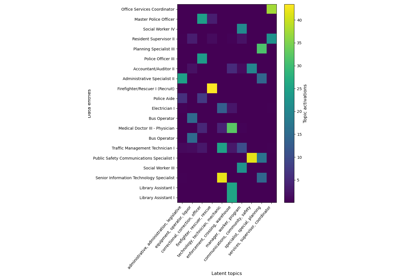

DatasetAll#
- class skrub.datasets.DatasetAll(name, description, source, target, X, y, path, read_csv_kwargs)[source]#
Represents a dataset and its information. With this state, the dataset is loaded in memory as a DataFrame (X and y). Additional information such as path and read_csv_kwargs are provided in case the dataframe has to be read from disk, as such:
ds = fetch_employee_salaries(load_dataframe=False) df = pd.read_csv(ds.path, **ds.read_csv_kwargs)
Gallery examples#


Encoding: from a dataframe to a numerical matrix for machine learning
Encoding: from a dataframe to a numerical matrix for machine learning

Feature interpretation with the GapEncoder
Feature interpretation with the GapEncoder